Data wydania: 15 października 2024
Cena pakietu: 35.99 zł
Oficjalny zwiastun DLC Zookeepers Animal Pack
Wzywamy wszystkich właścicieli zoo! Powitaj 7 nowych gatunków dzięki Pakietowi zwierząt dla właścicieli zoo w grze Planet Zoo! Ten pakiet przybliża twoich gości do natury dzięki wielu pożądanym gatunkom, które oczarują zarówno doświadczonych,
jak i nowych właścicieli zoo.
Zasznuruj robocze buty i załóż rękawice, aby odpowiednio się przygotować do stworzenia zoo jedynego w swoim rodzaju. Powitaj szereg niezwykłych zwierząt, zapoznaj się z ich tętniącymi życiem wybiegami i ozdób je jak prawdziwe zoo. Kolekcja ta zawiera samotnego i bystrego manula stepowego; pawiana płaszczowego, symbol starożytnej mądrości i złożoności społecznej, oraz zabawnego andoniedźwiedzia okularowego o wyjątkowym wyglądzie.
Oprócz tych nowych, kultowych dodatków Pakiet zwierząt dla właścicieli zoo obejmuje również ponad 95 oszałamiających elementów scenerii wraz z całkowicie nowym scenariuszem kampanii, w ramach którego dołączysz do zespołu świętującego piątą rocznicę premiery gry Planet Zoo w słynnym Zoo Frontier, aby upewnić się, że impreza będzie wystrzałowa!
Zasznuruj robocze buty i załóż rękawice, aby odpowiednio się przygotować do stworzenia zoo jedynego w swoim rodzaju. Powitaj szereg niezwykłych zwierząt, zapoznaj się z ich tętniącymi życiem wybiegami i ozdób je jak prawdziwe zoo. Kolekcja ta zawiera samotnego i bystrego manula stepowego; pawiana płaszczowego, symbol starożytnej mądrości i złożoności społecznej, oraz zabawnego andoniedźwiedzia okularowego o wyjątkowym wyglądzie.
Oprócz tych nowych, kultowych dodatków Pakiet zwierząt dla właścicieli zoo obejmuje również ponad 95 oszałamiających elementów scenerii wraz z całkowicie nowym scenariuszem kampanii, w ramach którego dołączysz do zespołu świętującego piątą rocznicę premiery gry Planet Zoo w słynnym Zoo Frontier, aby upewnić się, że impreza będzie wystrzałowa!
Galeria zdjęć
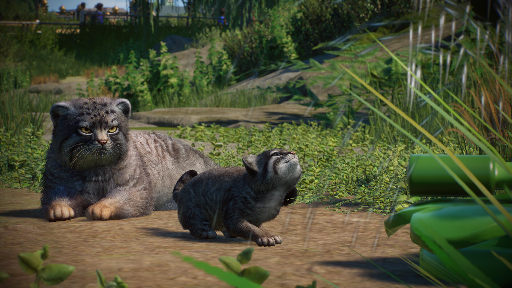
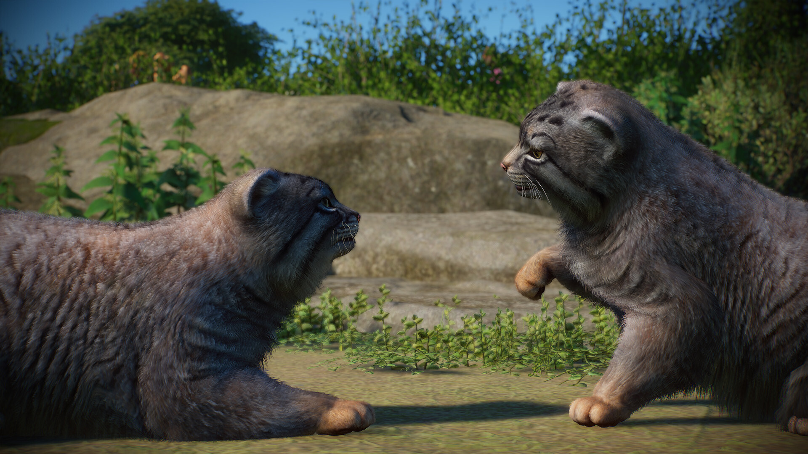
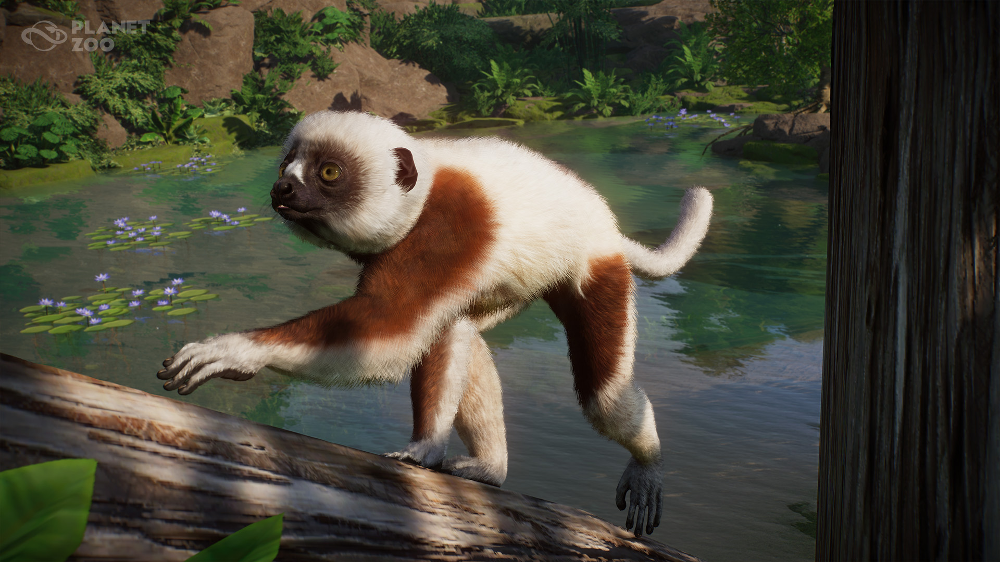
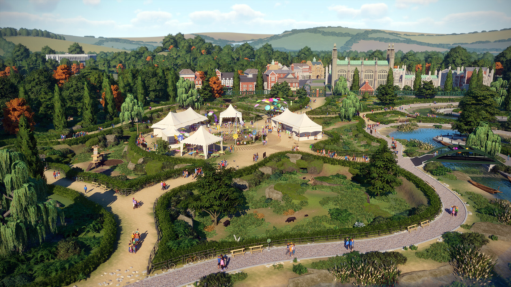
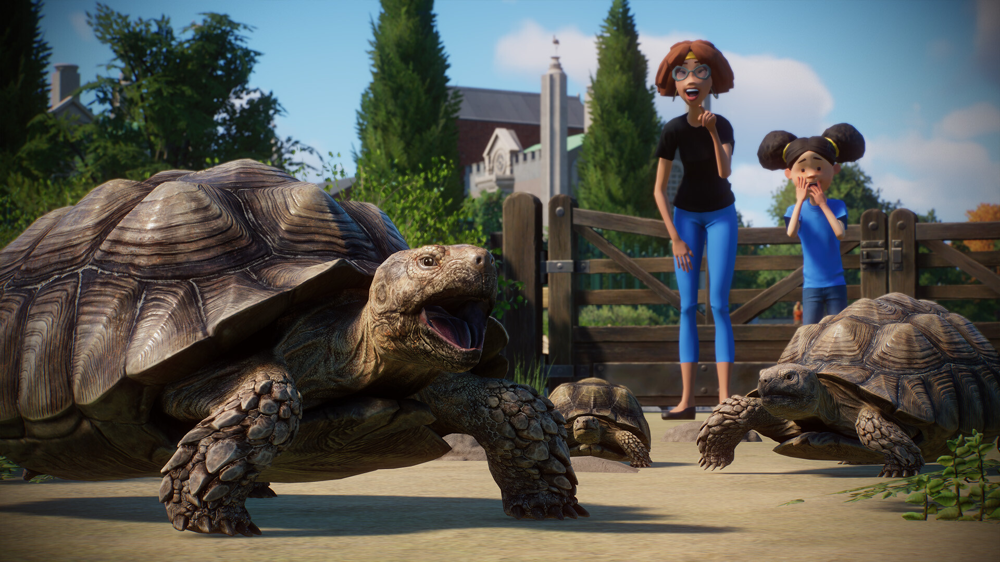
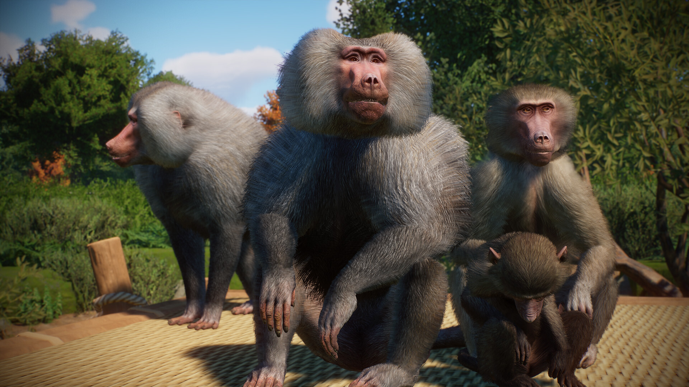
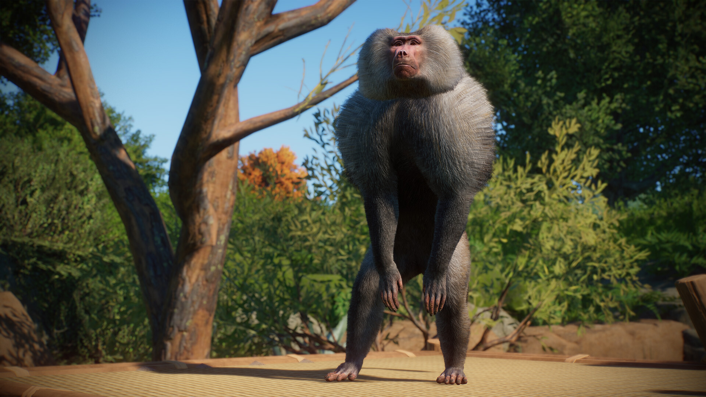
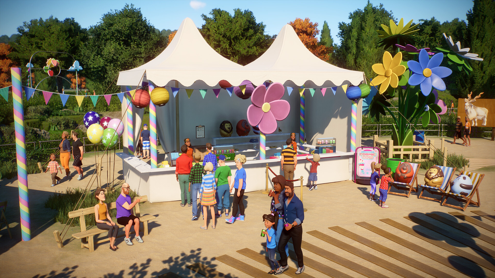
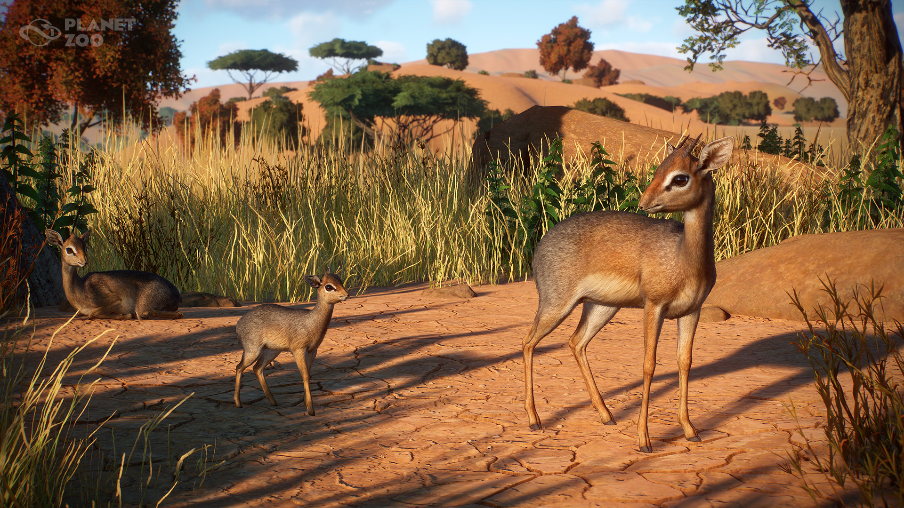
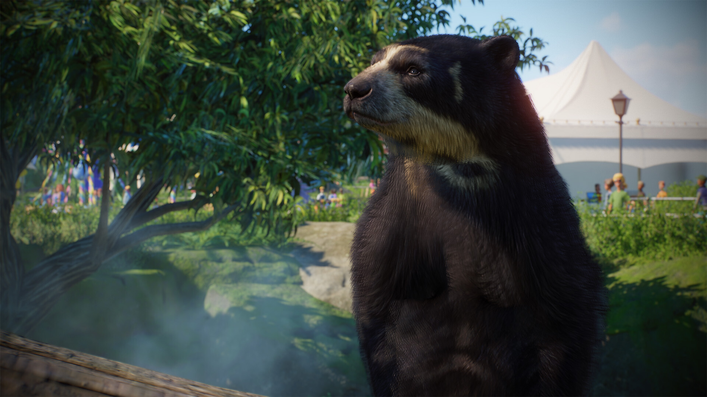
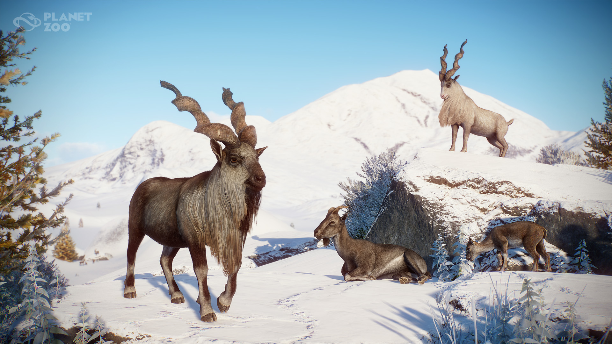
O tym DLC
Poznaj niezwykłe gatunki: nieuchwytnego manula stepowego o ogromnych oczach i metodycznych manierach, pawiana płaszczowego, który jest znany z niezwykłego wyglądu i silnych zachowań społecznych, zwinnego markura i jego imponujące poroże, oraz charakterystycznego andoniedźwiedzia okularowego z wyjątkowymi łatami na twarzy. W tym zestawie znajdziesz również pokaźnego żółwia pustynnego, delikatnego dikdika sawannowego i przyciągającą wzrok sifakę biało-kasztanową. Te wysoce pożądane zwierzęta wzbogacą twoje zoo dzięki swojej wyjątkowej urodzie i zachowaniom. Dołącz do nas w świętowaniu różnorodności dzikich zwierząt i tworzeniu niezapomnianych wrażeń dla gości, które sprawią, że każde zoo stanie się obowiązkowym punktem wycieczki podczas wizyty w okolicy!
Ponad 95 nowych fantastycznych elementów scenerii
Udoskonal swoje zoo dzięki nowym elementom scenerii i zbuduj zapierające dech w piersiach przystanie dla gości i zwierząt. Ciesz się wspólnie ze swoimi gośćmi, gdy będą wpatrywać się w pionowe ozdobne struktury kwiatowe, przyciągające wzrok chorągiewki i cudowne markizy, które z pewnością zrobią na nich ogromne wrażenie. Dodaj uroku i funkcjonalności dzięki różnym latarniom, które oświetlą parki, idealnie rozmieszczonym ławkom piknikowym dla gości, aby umożliwić im zjedzenie przekąsek, oraz dodatkowym miejscom siedzącym na odpoczynek między wybiegami zwierząt. Ta sceneria i inne elementy z pewnością stworzą żywą i przyjazną atmosferę, która wszystkich zachwyci i zainspiruje.
Nowy wciągający scenariusz Kampanii
Witamy na imprezie! Wciel się w rolę życia i pomóż zespołowi Planet Zoo w przygotowaniach do świętowania 5. rocznicy premiery w znanym na całym świecie Zoo Frontier! Jako ważny członek komitetu organizującego imprezę pomożesz powracającej do serii postaci, Emmie Goodwin, w przygotowaniach do niezapomnianej imprezy, która zapisze się na kartach historii Planet Zoo. Twoim zadaniem jest przygotowanie, zarządzanie i zadbanie o idealną imprezę w Zoo Frontier, aby wszyscy goście i zwierzęta miło spędzili czas. Obserwuj, jak radość niesie się wśród malowniczych wiejskich pól.